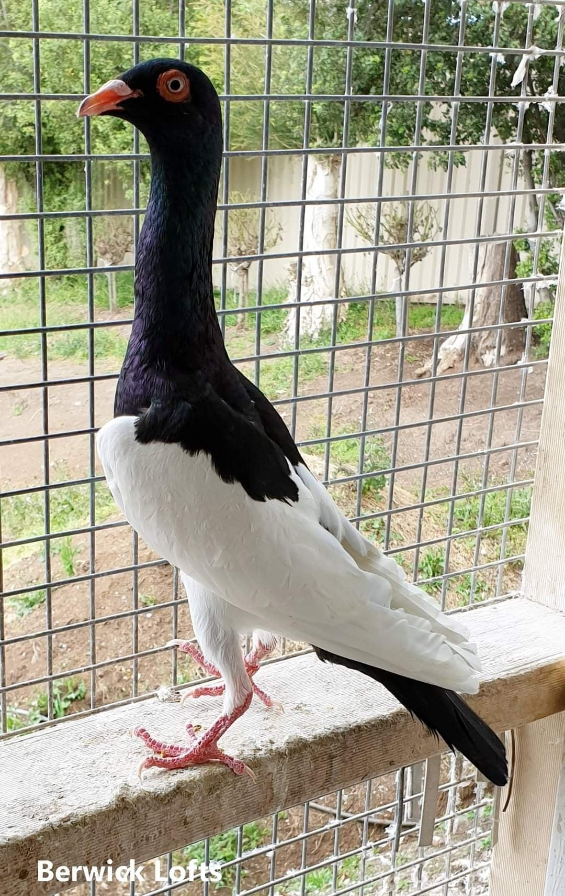
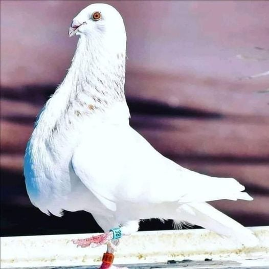
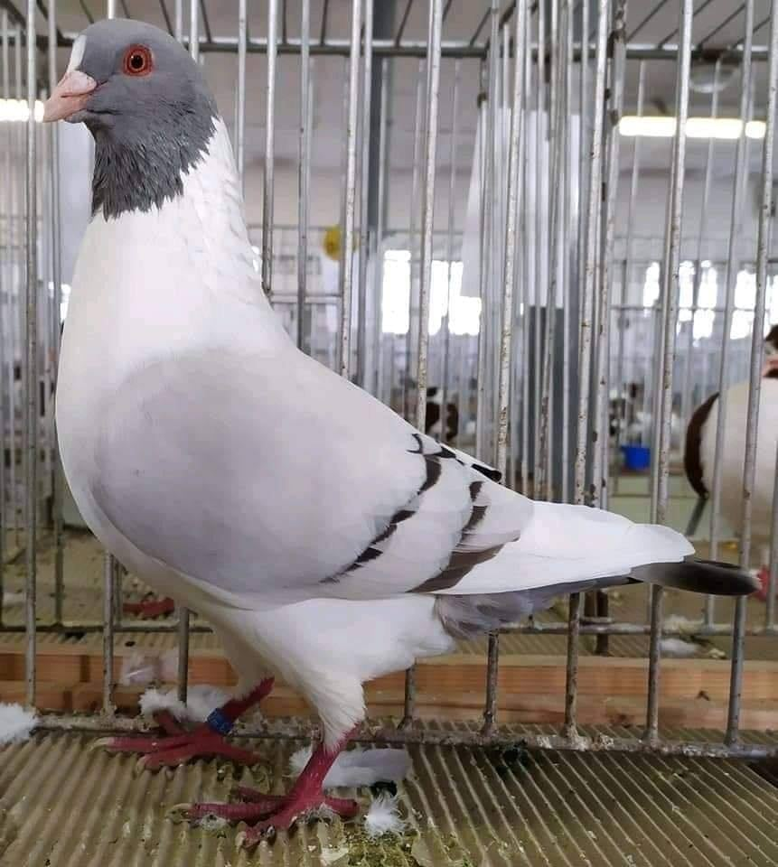
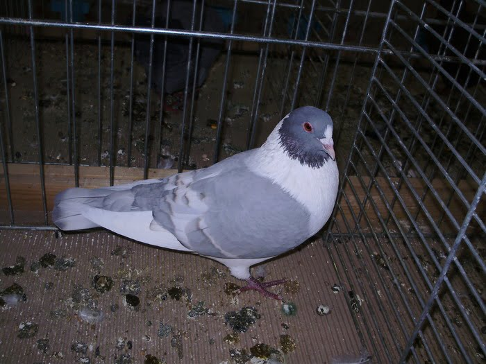
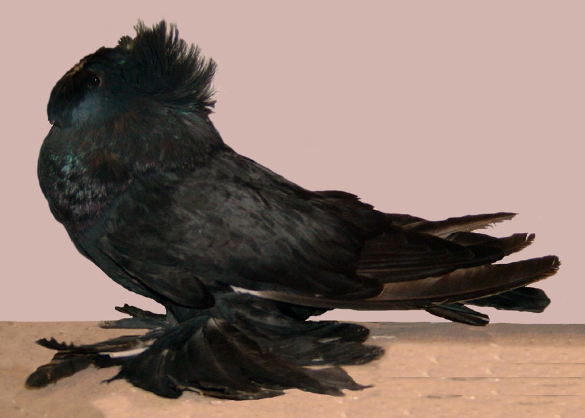
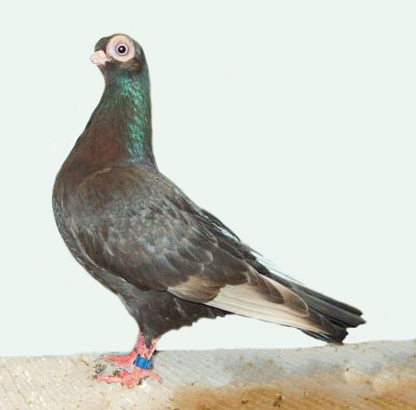
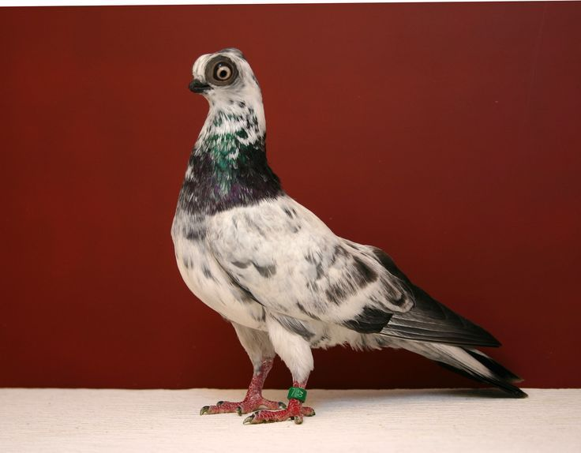
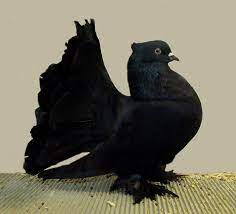

The English Magpie pigeon is a breed of domestic fancy pigeon. It was developed over many years of selective breeding. The original Magpie pigeon was one of the old Tumbler pigeon varieties, coming via Germany from Denmark about 1900. The breed along with other varieties of domesticated pigeons, all are descendants from the pigeon lovers
Read more The Prachen Kanik pigeon – also known by the names: Kanik, Prachener Kanik, Kanik in Praga, Прахенский каник – is a variety derived from the Prachener region (southern Bohemia, Czech / Czechoslovakia), which has been recognized since 1932 – while in Germany recognized in 1973. Varieties belonging to this type of Utility form pigeons include very popular, even claimed as one of the favorite varieties in the world of fancy pigeon. Have excellent flying skills, as well as an elegant appearance.
Read more The Prachen Kanik pigeon – also known by the names: Kanik, Prachener Kanik, Kanik in Praga, Прахенский каник – is a variety derived from the Prachener region (southern Bohemia, Czech / Czechoslovakia), which has been recognized since 1932 – while in Germany recognized in 1973. Varieties belonging to this type of Utility form pigeons include very popular, even claimed as one of the favorite varieties in the world of fancy pigeon. Have excellent flying skills, as well as an elegant appearance.
Read more The Prachen Kanik pigeon – also known by the names: Kanik, Prachener Kanik, Kanik in Praga, Прахенский каник – is a variety derived from the Prachener region (southern Bohemia, Czech / Czechoslovakia), which has been recognized since 1932 – while in Germany recognized in 1973. Varieties belonging to this type of Utility form pigeons include very popular, even claimed as one of the favorite varieties in the world of fancy pigeon. Have excellent flying skills, as well as an elegant appearance.
Read more The American Show Racer pigeon is a breed of domestic pigeon from United States. It is also known by some other names such as Show Pen Racer and Show Racer, and nicknamed as the ‘Bird of Dignity‘. It began in the early 1950s with the finest Racing Homers, selectively bred for their breed type.
Read more The American Show Racer pigeon is a breed of domestic pigeon from United States. It is also known by some other names such as Show Pen Racer and Show Racer, and nicknamed as the ‘Bird of Dignity‘. It began in the early 1950s with the finest Racing Homers, selectively bred for their breed type.
Read more Budapest Short Face Tumblers are a breed of fancy pigeon developed over many years of selective breeding. The breed was created in Budapest, Hungary. Budapest Short-Face Tumblers, along with other varieties of domesticated pigeons, are all descendants from the rock pigeon
Read more The Indian Fantail has become one of the most popular breeds of fancy pigeons. This guide book, by one of the leading experts of the breed, presents the received wisdom on all the finer points of the official breed standard as well as fully-informed advice on 21st century methods of proper care for the year-round well-being of the birds. The book includes an abundance of excellent full-color pictures that vividly illustrate even the most subtle points. It is a must read for all serious Indian Fantail fanciers be they novices or veterans
Read more s